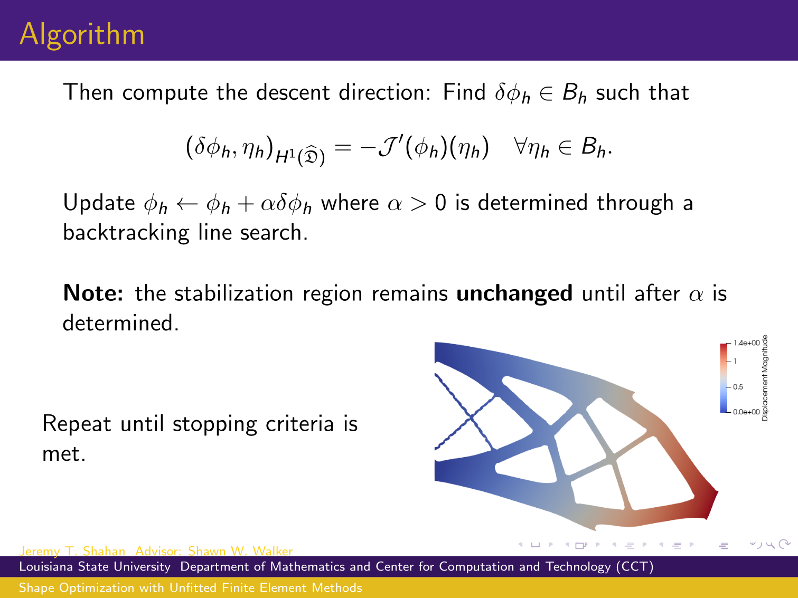
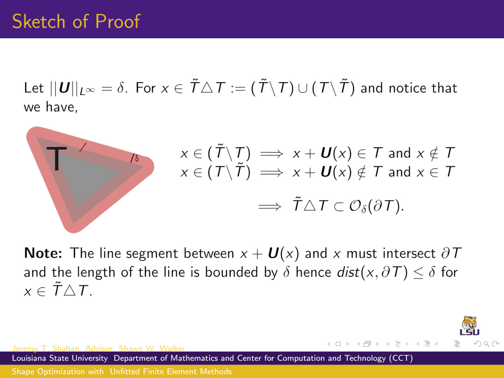
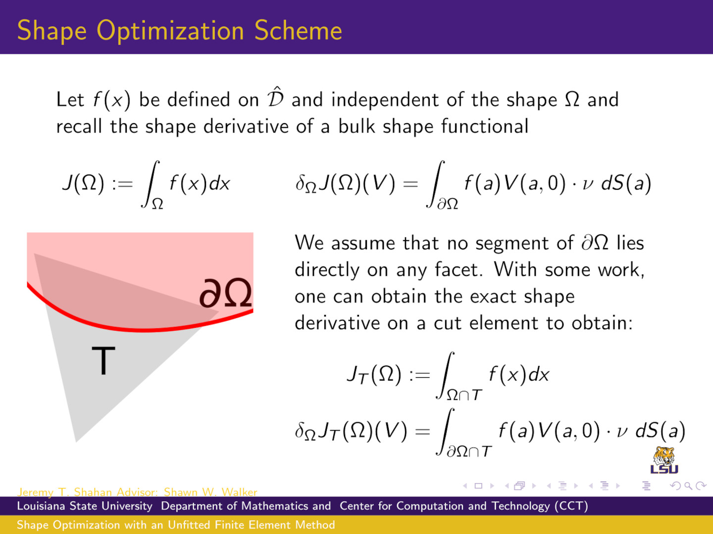
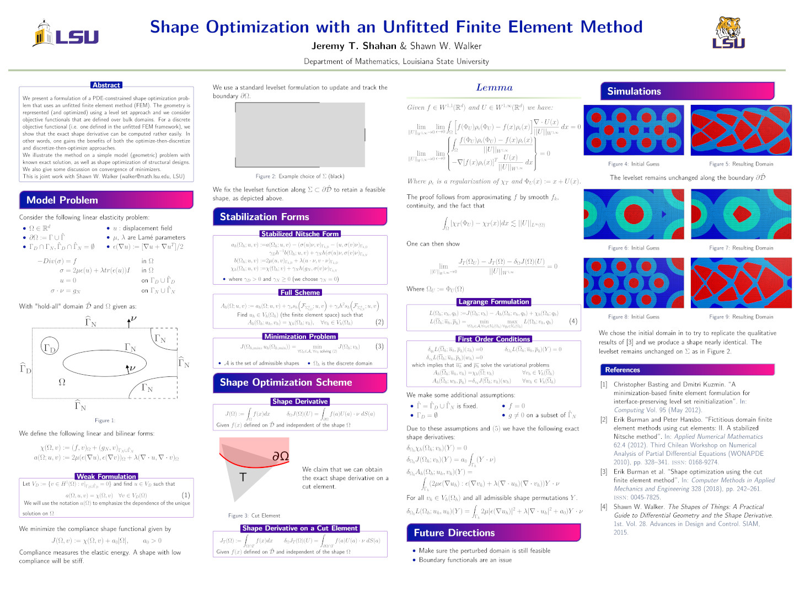
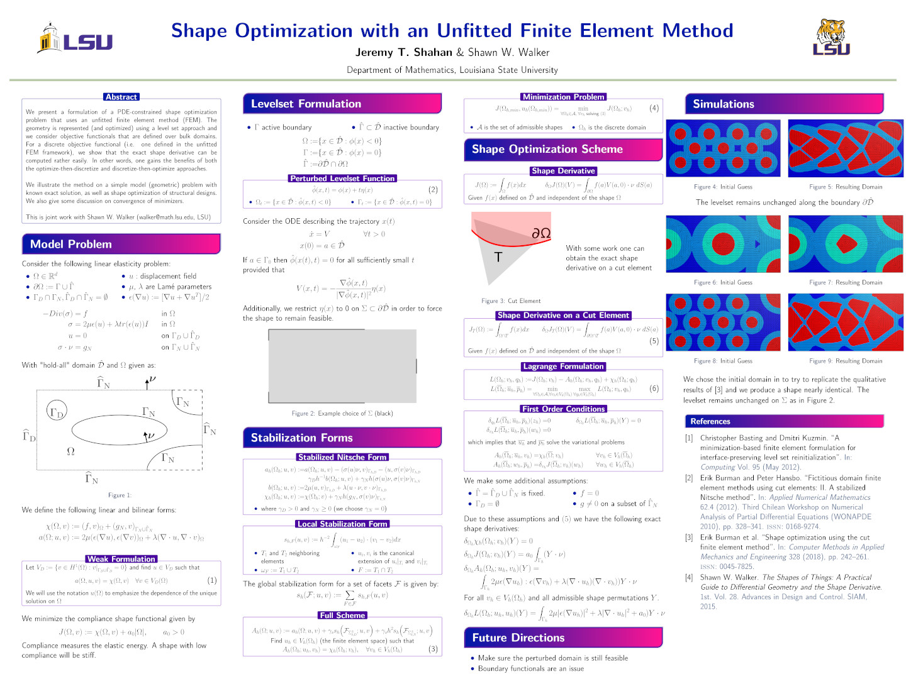

Research Talks

SIAM TXLA Sectional Meeting, October 2024.
I present our most recent advances on our shape optimization results.
Similar to the previous talk, but has been shortened.

SIAM Annual Meeting, July 2024.
I present our most recent advances on our shape optimization results.
Similar to that of the previous talk, except there are more details
regarding the proof of Fréchet differentiability for our shape
functional. A key part of the proof is included in this talk.

Scientific Computing Around Louisiana (SCALA), January 2024.
I present a brief overview of the shape optimization algorithm used for
an elasticity PDE-constrained minimization problem. Some
initial numerical experiments are included.
Poster Presentations

PDEs and Geometry: Numerical Aspects at ICERM, March 2024.
Similar to previoius poster, additional notes are included involved in
showing the Fréchet differentiability of the shape functional.

SIAM Texas-Louisiana Sectional Meeting, November 2023.
I present our results on our shape optimization paper. We present a
formulation of a PDE-constrained shape optimization problem that uses
an unfitted finite element method (FEM).